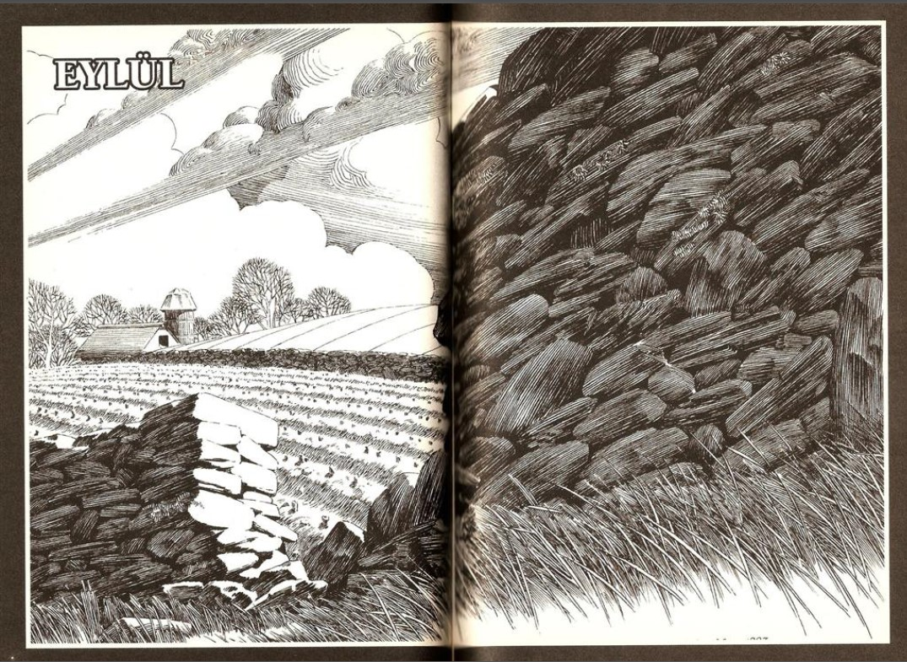
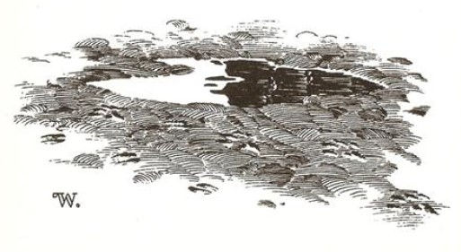
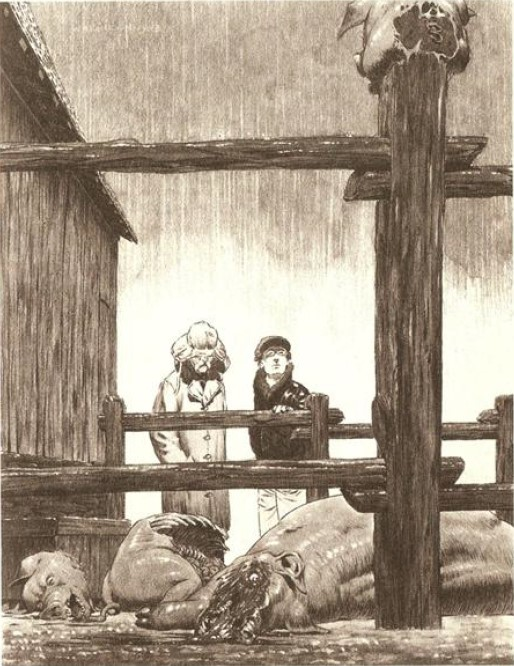

EYLÜL, HAFİF HAFİF ilerleyip dolunay gecesi yaklaştıkça Tarker's Mills'in korkmuş sakinleri sıcakların en azından bir süre için kesilmesini bekliyor, ama bu gerçekleşmiyordu. Koskoca dünyanın başka yerlerinde beysbol ve futbol sezonları bir bir başlamıştı; Kanada'daki Kayalık Dağları'nda, yılların şen Willard Scott'u Tarker's Mills sakinlerine Eylül ayının yirmi birinde bir ft kar yağacağını bildiriyordu. Ama dünyanın bu köşesinde yaz öylece kalakalmıştı. Gündüzleri sıcaklıklar seksenlerde seyrediyordu; çocuklar okullarına döneli üç hafta olmuştu ve saatleri gerçek zamanda geçen her saat için bir dakika ilerliyormuş gibi görünen sınıfların içinde ter dökmekten hiç mutlu değillerdi. Kocalar ve karıları hiç sebepsiz yere hırçın bir şekilde tartışıyorlardı. Paralı yolun girişindeki Kasaba Yolu'nun üzerinde bulunan O'Neil'in Gulf İstasyonu'nda, bir turist Pucky O'Neil'e benzin fiyatı konusunda söylendiğinde Pucky benzin pompasının başıyla herifin beynini dağıtıyordu. New Jersey'li olan herifin üst dudağına dört dikiş atılması gerekmişti, herif suratında sahte bir ifadeyle ve kısık bir sesle homurdanarak onu dava etmekten ve mahkemeye vermekten bahsedip duruyordu.
"Bu herifin neden şikâyet ettiğini bilmiyorum," diye o gece, barda asık bir suratla konuşuyordu Pucky. " Ona sadece gücümün yarısıyla vurdum, biliyor musun? Eğer herife bütün gücümle vursaydım onun o akıllı ağzını iyice benzetecektim. Biliyor musun?"
"Elbette," diyor Billy Robertson, çünkü Pucky eğer aynı fikirde olmadığı takdirde, ona da bütün gücüyle vuracakmış gibi görünüyordu. "Bir biraya daha ne dersin, Puck?"
"Sen de birinci sınıf yalakanın tekisin," dedi Pucky.
Milt Sturmfuller, bulaşık makinesinin tabakların birinden çıkaramadığı küçük bir yumurta parçası yüzünden karısını hastanelik ediyordu. Karısının öğle yemeği için kendisine verdiği tabağın üzerindeki kurumuş sarı lekeye bakan Milt, kadına sağlam bir tane geçirmişti. Pucky O'Neil'ın da söyleyeceği gibi, Milt karısına bütün gücüyle vurmuştu. "Lanet olası pasaklı orospu," diye söyleniyordu, mutfak zeminine yayılıp kalmış Donna Lee'nin tepesinde dikilerek, kadının kırık burnundan ve kafasının arkasından kanlar akıyordu. "Annem bulaşıkları tertemiz yıkardı ve onun bir bulaşık makinesi bile yoktu. Senin derdin ne?" Daha sonra, Milt, Portland Devlet Hastanesi'nin acil odasında doktora, Donna Lee'nin merdivenlerden düştüğünü söyledi. Evliliğinin dokuz yılını bir savaş halinde geçirdikten sonra artık dehşete düşmüş ve yılmış durumdaki Donna Lee de bunu doğrulayacaktı.
Dolunay gecesi saat yedi sularında rüzgâr çıkmıştı - o uzun yaz mevsiminin ilk üşütücü rüzgârıydı. Rüzgâr kuzeyden fırtına bulutları getiriyor, dolunay bir süre için bu bulutların aralarına dalıp çıkarak ve onları dövülmüş gümüş rengine dönüştürerek adeta bulutlarla elim sende oyunu oynuyordu. Ardından bulutlar kararıp yoğunlaştı ve dolunay gözden kayboldu . . . ama hâlâ oradaydı; Tarker's Mills'in yirmi mil dışındaki evden gelgit dalgalarının hissedildiği gibi eve daha yakın olan Canavar da dolunayın çekimini hissedebiliyordu.
Sabah iki sularında, kasabanın yaklaşık yirmi mil dışında bulunan Batı Stage Yolu'ndaki Elmer Zinneman'ın domuz ağılından korkunç cıyaklamalar yükseliyordu. Üzerine sadece pijamasının altım ve terliklerini giymiş olan Elmer, tüfeğini almaya gitti. 1947'de Elmer kendisiyle evlendiğinde on altı yaşında ve neredeyse güzel bir kadın olan karısı dışarı çıkmaması, evde kendisiyle kalması için ağlayıp yalvarıyordu. Elmer kadını savurup uzaklaştırdı ve girişte duran silahını eline aldı. Domuzlar artık sadece cıyaklamıyordu; çığlıklar atıyorlardı. Sesleri, bir manyak tarafından pijama partilerinde gafil avlanmış bir sürü genç kızın attığı çığlıklar gibiydi. Elmer gidiyordu ve hiçbir şey onu durduramayacaktı, böyle diyordu karısına ... ve gecenin içinde yükselen bir zafer ulumasıyla birlikte adamın nasırlaşmış eli arka kapının mandalında donakalıyordu. Bu bir kurt ulumasıydı, ama ulumada o kadar insani bir şey vardı ki, işte o şey Elmer'in kapı mandalını bırakmasını ve Alice Zinneman tarafından oturma odasına sürüklemesine izin vermesini sağlayacaktı. Adam kollarını karısına dolamıştı ve kadını kanepeye doğru götürüyordu; orada ikisi, iki korkmuş çocuk gibi oturup kaldılar.
Artık domuzların çığlıkları duraklamaya başlamıştı ve tamamen susuyorlardı. Evet, susuyorlardı. Birer birer susuyorlardı. Gargara yaparken çıkan boğuk gürültülere benzeyen korkunç sesler domuzların cıyaklamalarını bastırıyordu. Canavar yeniden uludu ve uluması dolunay gibi gümüşe benziyordu. Elmer pencereye doğru gitti ve bir şeyin - ne olduğunu söyleyemeyeceği bir şeyin - sıçrayarak karanlığın derinliklerinde kaybolduğunu gördü.
Ardından yağmur başlamıştı, Elmer ve Alice tüm ışıkların yanık olduğu yatak odalarında, yataklarının üzerinde otururlarken yağmur pencereleri topa tutuyordu. Soğuk bir yağmurdu, sonbaharın ilk gerçek yağmuru ve yarın yaprakların üzerine ilk renk dalgaları düşmeye başlayacaktı.
Elmer, ağılında beklediği şeyle karşılaştı; bir katliam. Dokuz dişi domuzunun tamamı ve erkek domuzlarının ikisi ölmüştü - bağırsakları deşilmiş ve kısmen yenmişlerdi. Çamurun içinde yatıyorlardı, leşlerinin üzerine soğuk yağmur damlaları çarparken yuvalarından fırlamış gözleri sonbaharın soğuk gökyüzüne çevrilmişti.
Elmer'in Minot'tan çağırdığı kardeşi Pete, onun yanında duruyordu. Uzun bir süre boyunca konuşmadılar ve sonra Elmer, Pete'in de aklından geçenleri söylemeye başladı. "Sigorta zararın bir kısmını karşılayacaktır. Hepsini değil, ama bir kısmını. Sanırım gerisini de ben halledebilirim. Başka bir insanın yerine benim domuzlarımın ölmesi daha iyi."
Pete başını sallayarak onayladı. "Yeter artık " diye yağmur yüzünden zar zor duyulan bir mırıltıyla söylendi.
"Ne demek istiyorsun?"
"Ne demek istediğimi biliyorsun. Bir sonraki dolunayda dışarıda kırk adam olmalı... ya da altmış ... ya da yüz altmış. Bütün salaklar bile bunu görebilirken milletin etrafta dolanıp hiçbir şey olmuyormuş gibi davranmayı kesmesinin zamanı geldi artık! Isa aşkı için, şuraya bir baksana!"
Pete, toprağı işaret ediyordu. Katledilmiş domuzların çevresinde, ağılın yumuşak toprağının üzerinde bir sürü iz vardı. Kurt izlerine benziyorlardı... ama aynı zamanda, tuhaf bir biçimde de insan izlerine.
"Şu s.kik izleri görüyor musun?"
"Görüyorum," diye kabullendi Elmer.
"Bu izleri Pike'daki Tatlı Betsy'nin mi yaptığını sanıyorsun?"
"Hayır. Sanmıyorum."
"Bu izleri kurtadam yaptı," diye devam etti Pete, "bunu sen de biliyorsun, Alice de biliyor, bu kasabadaki çoğu insan da biliyor. Canı cehenneme, bir sonraki kasabadan geliyor olmama rağmen ben bile biliyorum." 1650'lerin bir New England Püriteni'nin yüzüne benzeyen aksi ve sert bir yüzle kardeşine doğru baktı. Ve sonra tekrarladı: 'Yeter artık. Bu işin bitirilmesinin zamanı geldi."
Yağmur iki adamın yağmurluklarının üzerine durmaksızın hafif hafif vurmayı sürdürürken, Elmer bu sözler üzerinde uzun uzun düşündü ve ardından başını sallayarak onayladı. "Ben de böyle düşünüyorum. Ama gelecek dolunay doğru zaman değil."
" Kasım'a kadar beklemek mi istiyorsun? "
Elmer başıyla onayladı. "Çıplak ormanda. Eğer kar yağarsa çıplak ormanda daha iyi iz sürülür."
"Bir sonraki aya ne dersin?"
Elmer Zinneman, ambarının yanındaki ağılında katledilmiş domuzlarına bakıyordu. Ardından kardeşi Pete'e baktı.
"İnsanlar, dikkatli olsalar daha iyi olur."

